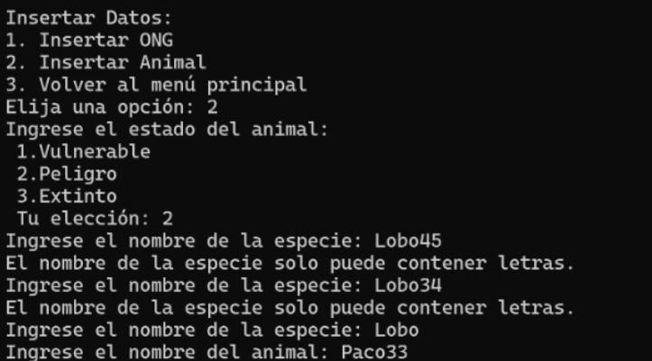

CRUD with Python and MySQL
This project involves creating a basic CRUD (Create, Read, Update, Delete)
application to manage a user database using Python and MySQL.
The application allows
users to add new entries with details such as name, email, and age, view a list of all users
along with their specific information, modify existing user data, and remove users from the
database.
The primary objective was to develop a user-friendly interface for managing user data efficiently. The application aims to simplify user management tasks and improve data integrity.
This project significantly enhanced my understanding of back-end development and database management. I learned the importance of writing clean, maintainable code and following best practices.